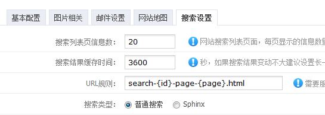
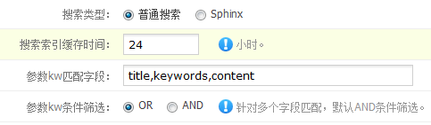

站内搜索页面地址：index.php?c=content&a=search
一、搜索方式介绍
1、普通搜索：配置一些时间变量就行，“核心管理”-“基本配置”中设置“搜索”
2、Sphinx：高效搜索方式，要求懂得配置
二、搜索表单介绍
搜索表单最基本的结果如下：
<input name="c" type="hidden" value="content" />
<input name="a" type="hidden" value="search" />
<input name="kw" type="text" />
<input name="submit" type="submit" value="搜索" />
</form>
a，c这两个隐藏域必须存在，kw是搜索关键字（也可以写出username，表示会员名称）
当然你也可以加入一些自定义字段搜索（要加自定义字段搜索，必须加上栏目catid或者模型modelid）
如：商品作者：<input name="zuozhe" type="text" />（栏目id或者模型id必须有哦<input name="catid" type="hidden" value="栏目的catid值" />）
1、按照会员来搜索
<form action="{url("content/search")}" name="formsearch" method="get">
<input name="c" type="hidden" value="content" />
<input name="a" type="hidden" value="search" />
<input name="username" type="text" /> //这里就以username作为搜索条件
<input name="submit" type="submit" value="搜索" />
</form>
2、在栏目catid=100中按自定义字段aaa来搜索
<form action="{url("content/search")}" name="formsearch" method="get">
<input name="c" type="hidden" value="content" />
<input name="a" type="hidden" value="search" />
<input name="catid" type="hidden" value="100" /> //栏目=100
<input name="aaa" type="text" /> //aaa是自定义字段
<input name="submit" type="submit" value="搜索" />
</form>
四、URL规则配置
1、伪静态配置，搜索规则必须服务器支持伪静态
指向地址：index.php?c=content&a=search&id=搜索id&page=分页id
2、规则配置

必填参数：{id}搜索id，{page}分页id
举例说明：/search-99-page-10.html（99是搜索id，10是分页id）
填写规则：search-{id}-page-{page}.html
伪 静 态：RewriteRule ^search-([0-9]+)-page-([0-9]+).html$ index.php?c=content&a=search&id=$1&page=$2 [L]
五、kw匹配字段设置

通过设置kw参数可匹配多个字段，支持附表字段（必须存在catid或者modelid参数）
举例说明
1、kw匹配title,keywords,description字段，OR关系
解析为：title like '%$kw%' OR keywords like '%$kw%' OR description like '%$kw%'
模糊匹配一般设置OR关系
2、kw匹配title,content,cname附表字段，OR关系
解析为：主表.catid=1 AND (主表.title like '%$kw%' OR 附表.content like '%$kw%' OR 附表.cnamelike '%$kw%')
匹配附表字段必须有caitd或者modelid
六、支持显示附表字段
参数：more=1（必须存在catid或者modelid参数）
举例：?c=content&a=search&catid=2&more=1
七、自定义搜索排序
参数：order=字段_desc[,字段_asc] 默认DESC排序（若排序附表字段必须存在catid或者modelid参数）
举例：
1、按照hits排序：?c=content&a=search&order=hits_desc
2、按照栏目3附表字段aaa排序：?c=content&a=search&catid=3&order=aaa（默认为DESC排序）